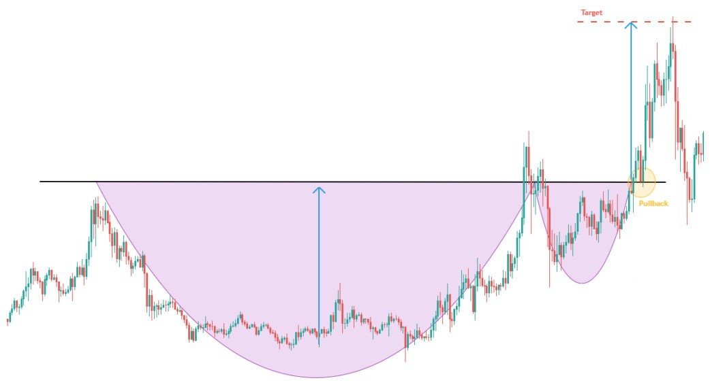

- Figures chartistes : La Tasse avec anse -
La figure chartiste en tasse avec anse est une figure de continuation formée par deux creux arrondis, le premier étant plus profond et plus large que le second.
Les hauts de la tasse et de l'anse sont alignés sur une même droite de résistance horizontale. Cette ligne est appelée la ligne de cou.
La forme des deux creux peut faire penser à un rounding bottom ce qui traduit de l'essoufflement progressif des vendeurs. Les acheteurs reprennent peu à peu la main une fois la ligne de cou franchit (seuil psychologique), la force acheteuse devient alors très forte.
L'objectif de la figure en tasse avec anse se calcule en reportant la hauteur de la tasse au point de cassure de l'anse. Cependant, il est davantage conseillé de reporter uniquement la moitié de la hauteur de la tasse d'après les études de T.Bulkowki.
Validité :
- La figure doit être précédée d'un mouvement haussier important.
- Le plus bas du creux de la tasse doit être inférieur à 50% du mouvement haussier ayant précédé la formation de la figure.
- Le plus bas du creux de l'anse doit être inférieur à 50% de la hauteur de la tasse.

Statistiques :
79% la sortie de la figure est haussière.
73% l’objectif de la figure en tasse avec anse est atteint (moitié de la hauteur de la tasse), après cassure de la ligne de cou.
74% pullback en support sur la ligne de cou.
- L'inventeur de cette figure (J O Neil) nous dit que l'objectif de hausse de cette figure chartiste est très important et qu'il faut donc laisser porter le trade afin de profiter dans l'ensemble du mouvement. En effet, cette figure est une figure de continuation majeure offrant un potentiel haussier important à long terme.
- Si la tasse à un coté gauche plus bas que le côté droit, la performance de la figure est plus importante.
- Il est conseillé d'attendre un pullback en support sur la ligne de cou avant d'envisager d'ouvrir une position Long.
- Les pullbacks en support sur la ligne de cou de la figure sont néfastes pour la performance.